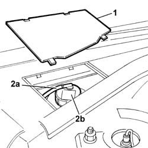

4130B14 Power assisted steering fluid reservoir cap - R.R. - Check fluid level and top up if necessary
- Path
- Procedures > 41 STEERING > 4130 POWER ASSISTED STEERING > 4130B POWER STEERING HYDRAULIC SYSTEM > 4130B14 Power assisted steering fluid reservoir cap - R.R. - Check fluid level and top up if necessary
- Kind
- repair procedure (removal / refitting; the operation number is the code)
- Applies to
- all engines; all production periods
- Interactive page
- https://sloeber94.github.io/elrnDB-lThss/en/#/78776
Applies to: all engines; all production periods
 Removing
Removing
 Refitting
Refitting1. Lift up the power assisted steering fluid reservoir protective cap.
2. Release the breather pipe (2a) and, undoing it in an anti-clockwise direction, remove the power assisted steering fluid reservoir cap.

Applies to: all engines; all production periods
Refitting
Removing- Tighten the power assisted steering fluid reservoir cap in a clockwise direction.
- Fit the power assisted steering fluid reservoir protective cover.